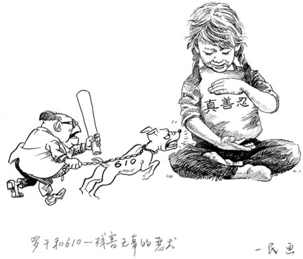

Cửu Bình 5: Giang Trạch Dân và ĐCSTQ câu kết với nhau đàn áp Pháp Luân Công (audio)
Tài liệu gốc: http://dajiyuan.com/gb/4/11/27/n730058.htm
0 – Dẫn nhập
1 – Đảng cộng sản là gì?
2 – Đảng cộng sản Trung Quốc xuất sinh như thế nào?
3 – Chính quyền bạo lực của Đảng cộng sản Trung Quốc.
4 – Đảng cộng sản, một lực lượng phản vũ trụ.
5 – Giang Trạch Dân và Đảng cộng sản Trung Quốc lợi dụng lẫn nhau để đàn áp Pháp Luân Công.
6 – Đảng cộng sản Trung Quốc phá hoại văn hoá dân tộc.
7 – Lịch sử giết chóc của Đảng cộng sản Trung Quốc.
8 – Bản chất tà giáo của Đảng cộng sản Trung Quốc.
9 – Bản tính lưu manh của Đảng cộng sản Trung Quốc.
Lời mở đầu
|
 |
Cô Trương Phó Trân, khoảng 38 tuổi, là một nhân viên của công viên Hiện Hà, thành phố Bình Độ, tỉnh Sơn Đông, Trung quốc. Cô đến Bắc Kinh vào tháng 11 năm 2000 để thỉnh nguyện cho Pháp Luân Công và sau đó bị chính quyền bắt cóc. Theo những người hiểu biết về trường hợp này, công an đã tra tấn và làm nhục cô, lột hết quần áo của cô ra và cạo trọc đầu cô. Chúng trói cô vào một chiếc giường, chân tay bị buộc kéo căng ra bốn phía và vì thế cô buộc phải đi vệ sinh ngay ở trên giường. Sau đó công an đã tiêm vào người cô một loại thuốc độc không rõ tên. Sau khi bị tiêm thuốc độc, cô đã bị đau đớn đến nỗi gần như phát điên. Cô đã phải chịu đựng trong đau đớn tột cùng cho đến khi cô trút hơi thở cuối cùng. Các nhân viên của Phòng 610 tại địa phương đã chứng kiến toàn bộ sự việc này (trích dẫn từ một bài đăng trên trang web Minh Huệ ngày 23/07/2004). [1]
Cô Dương Lệ Vinh, 34 tuổi, ở phố Bắc Môn, thành phố Định Châu, quận Bảo Định, tỉnh Hà Bắc. Gia đình cô thường xuyên bị công an quấy rầy và đe dọa chỉ bởi vì cô tập Pháp Luân Công. Vào ngày 8 tháng 2 năm 2002, sau khi bị công an đột kích bất ngờ vào ban đêm, chồng cô Dương, là một người lái xe cho Phòng Tiêu chuẩn và Khí tượng, bị khủng hoảng tinh thần và sợ bị mất việc làm. Anh không thể chịu được những áp lực nặng nề từ phía chính quyền. Sáng sớm hôm sau, lợi dụng lúc cha mẹ già đi ra khỏi nhà, anh ta đã bóp cổ vợ mình cho đến chết. Cô Dương chết một cách bi thảm, bỏ lại một đứa con trai 10 tuổi. Ngay sau đó, chồng cô đi báo cáo sự việc với chính quyền, và công an lập tức đến hiện trường để khám nghiệm tử thi cô Dương, lúc đó vẫn còn ấm. Chúng mổ và lấy nhiều nội tạng ra khỏi thân thể cô, trong khi các bộ phận nội tạng vẫn còn nóng ấm và máu vẫn phun ra. Một nhân viên Sở Công an Định Châu nói “Đây không phải là khám nghiệm tử thi, mà là giải phẫu sống!” (trích dẫn từ một bài đăng trên trang web Minh Huệ ngày 25/09/2004). [2]
Tại trại lao động cưỡng bức Vạn Gia thuộc tỉnh Hắc Long Giang, một phụ nữ đang có thai khoảng 7 tháng bị treo lên trên một cái xà ngang. Cả hai tay cô bị trói bằng một sợi dây thừng thô vắt qua một cái ròng rọc gắn trên thanh xà. Cái ghế mà chúng để cô đứng lên bị lấy đi, và cô bị treo lủng lẳng trên không trung. Cây xà ngang ở trên mặt đất khoảng 3 đến 4 mét. Sợi dây thừng được vắt qua cái ròng rọc, và bọn cai ngục nắm một đầu dây. Khi bọn cai ngục kéo sợi dây, cô bị kéo lên trên không, khi chúng thả sợi dây ra, cô bị rơi ngay xuống đất. Người phụ nữ đang mang thai này bị đau đớn vì bị tra tấn như thế này cho đến khi cô bị sẩy thai. Còn dã man hơn nữa là chúng bắt chồng cô phải chứng kiến cảnh người vợ bị tra tấn như vậy (trích dẫn từ một bài đăng trên trang web Minh Huệ ngày 15/11/2004, một cuộc phỏng vấn với Cô Vương Ngọc Chi, người bị tra tấn hơn 100 ngày tại trại lao động cưỡng bức Vạn Gia). [3]
Những những thảm án kinh tâm này đang xảy ra ở Trung Quốc hiện đại ngày nay. Nó xảy ra với những học viên Pháp Luân Công, những người đang bị đàn áp tàn bạo, và những trường hợp kể trên chỉ là một vài trong số vô số các trường hợp tra tấn khác liên tục diễn ra trong hơn 5 năm qua.
Từ khi Trung Quốc bắt đầu cải cách nền kinh tế vào cuối những năm 1970, Đảng Cộng sản Trung Quốc (ĐCSTQ) đã cố gắng tạo cho mình một hình ảnh tích cực và tự do trong cộng đồng quốc tế. Tuy nhiên, cuộc đàn áp đẫm máu, vô lý, tràn lan, dữ dằn và tàn bạo đối với Pháp Luân Công diễn ra trong hơn 5 năm qua, đã cho cộng đồng quốc tế lại một lần nữa chứng kiến bộ mặt thật của ĐCSTQ và sự ô nhục lớn nhất của ĐCSTQ trong lĩnh vực nhân quyền. Công chúng ở Trung Quốc, trong một ảo tưởng rằng ĐCSTQ đã cải thiện và tiến bộ, đã trở nên quen với việc đổ lỗi chuẩn mực đạo đức thấp kém của cảnh sát cho sự tàn bạo của hệ thống luật pháp và bảo vệ luật pháp của Trung Quốc. Tuy nhiên, cuộc đàn áp dã man và có hệ thống đối với Pháp Luân Công diễn ra ở khắp nơi và ở tất cả các cấp trong xã hội Trung Quốc đã hoàn toàn làm tan vỡ ảo tưởng về việc cải thiện tình hình nhân quyền. Nhiều người đang tự hỏi làm sao mà một cuộc đàn áp đẫm máu và vô nhân đạo như vậy lại có thể đang diễn ra ở Trung Quốc. Trật tự xã hội đã ổn định sau những hỗn loạn của Đại Cách mạng Văn hoá 20 năm trước. Tại sao Trung Quốc lại bước vào một chu kỳ ác mộng tương tự nữa như vậy? Tại sao Pháp Luân Công, tuân theo nguyên lý “Chân Thiện Nhẫn”, và đã được phổ biến ở hơn 60 nước trên thế giới, lại chỉ bị đàn áp ở Trung Quốc, chứ không phải ở bất cứ nơi nào khác trên thế giới? Trong cuộc đàn áp này, mối quan hệ giữa Giang Trạch Dân và ĐCSTQ là như thế nào?
Giang Trạch Dân bất tài và vô đạo đức. Nếu không có bộ máy bạo lực tinh nhuệ như Ðảng Cộng sản Trung Quốc dựa trên cơ sở chém giết và lừa dối, thì ông ta sẽ không bao giờ có thể phát động chiến dịch diệt chủng này, một chiến dịch diệt chủng được thực hiện trên toàn bộ lãnh thổ Trung Quốc và thậm chí còn xuyên ra cả hải ngoại. Tương tự như vậy, ĐCSTQ sẽ không thể dễ dàng đi ngược dòng chảy của xu thế lịch sử và môi trường được tạo ra bởi cuộc cải cách kinh tế trong thời gian gần đây của ĐCSTQ và những nỗ lực hòa nhập với thế giới; chỉ có một kẻ độc tài cứng đầu cứng cổ như Giang Trạch Dân nhất quyết làm theo ý mình mới có thể đưa ra và thực hiện chính sách diệt chủng này. Sự thông đồng và cộng hưởng giữa Giang Trạch Dân và bóng ma tà ác của Ðảng Cộng sản Trung Quốc đã khuếch đại sự tàn bạo của cuộc đàn áp đến một mức độ chưa từng có trong lịch sử. Nó tương tự như sự cộng hưởng giữa âm thanh của thiết bị của người leo núi trên tuyết dày có thể gây nên một vụ lở tuyết và đem đến những hậu quả thảm khốc.
******************
I. Cùng một lai lịch tạo ra cùng một nhận thức về khủng hoảng
Giang Trạch Dân sinh năm 1926, một năm bất ổn. Cũng giống như Ðảng Cộng sản Trung Quốc che dấu lịch sử đẫm máu của nó, Giang Trạch Dân, trước Đảng và nhân dân Trung Quốc, cũng đã che đậy lịch sử phản bội của mình đối với Trung Quốc.
Vào năm Giang Trạch Dân 17 tuổi, chiến tranh chống phát-xít trên toàn thế giới đang diễn ra ác liệt. Trong khi những thanh niên yêu nước thay nhau lên đường ra tiền tuyến đánh Nhật để cứu Trung Quốc, thì Giang Trạch Dân quyết định theo đuổi việc học lên cao hơn vào năm 1942 tại Đại học Trung ương, một trường đại học của chính phủ bù nhìn Uông Tinh Vệ ở Nam Kinh dưới quyền kiểm soát của quân Nhật. Theo nhiều nguồn tin điều tra thì lý do thực sự là vì bố đẻ của Giang Trạch Dân là Giang Sĩ Tuấn đã từng là một sĩ quan cao cấp trong Ban Tuyên truyền phản Hoa của quân đội Nhật sau khi Nhật chiếm đóng tỉnh Giang Tô trong cuộc chiến tranh xâm lược Trung Quốc của Nhật. Giang Sĩ Tuấn đích thực là một tên Hán gian.
Về phương diện Hán gian phản quốc, Giang Trạch Dân và Đảng cộng sản Trung Quốc (ĐCSTQ) là giống hệt nhau: cả hai đều không có một chút tình cảm nào đối với nhân dân Trung Quốc và dám tùy tiện giết hại dân lành vô tội.
Để lọt được vào ĐCSTQ để làm giàu và thăng quan tiến chức sau khi ĐCSTQ chiến thắng trong cuộc nội chiến, Giang Trạch Dân đã bịa đặt rằng ông ta được người chú là Giang Thượng Thanh, người đã ra nhập ĐCSTQ từ trẻ và sau đó bị bọn cướp bắn chết, nhận làm con nuôi và nuôi dưỡng. Nhờ bịa đặt lý lịch gia đình, ông ta mới có thể được thăng chức từ một cán bộ cấp thấp lên Thứ trưởng Bộ Công nghiệp Điện tử chỉ trong vòng có mấy năm. Việc thăng chức của Giang không phải là vì ông ta có tài, mà là do quan hệ và thiên vị cá nhân. Trong thời kỳ ông ta là Bí thư Thành ủy Thượng Hải, Giang Trạch Dân đã hết sức nịnh bợ những người lãnh đạo cao cấp của ĐCSTQ như Lý Tiên Niệm và Trần Vân [4] vì hai người này đến Thượng hải hàng năm vào dịp Tết. Thậm chí, với tư cách là Bí thư Thành ủy Thượng hải, ông ta đã từng đích thân đứng đợi trong tuyết dày hàng giờ đồng hồ để tự tay trao bánh sinh nhật cho Lý Tiên Niệm.
Cuộc thảm sát trên quảng trường Thiên An Môn là một bước ngoặt nữa trong cuộc đời của Giang Trạch Dân. Ông ta trở thành Tổng Bí thư Ðảng Cộng sản Trung Quốc sau khi bịt miệng một tờ báo tự do là World Economic Herald (tạm dịch là Người đưa tin Kinh tế Thế giới), bắt Chủ tịch Quốc hội Vạn Lý giam lỏng tại nhà riêng, và ủng hộ việc thảm sát. Thậm chí trước khi cuộc thảm sát diễn ra, Giang Trạch Dân đã trao một bức thư mật cho Đặng Tiểu Bình, đề xuất rằng phải có “các biện pháp kiên quyết” đối với các sinh viên; nếu không “cả đất nước và Đảng sẽ bị khuất phục”. Trong 15 năm qua, Giang Trạch Dân đã tiến hành đàn áp và giết hại bừa bãi tất cả những người bất đồng chính kiến hay các nhóm có niềm tin độc lập, dưới chiêu bài “ổn định là ưu tiên hàng đầu”.
Từ khi cả Nga và Trung Quốc bắt đầu việc khảo sát biên giới chung năm 1991, Giang Trạch Dân đã hoàn toàn công nhận kết quả xâm lược Trung Quốc của Nga Hoàng và Liên-xô cũ, và hoàn toàn chấp thuận tất cả những hiệp ước bất công giữa Trung Quốc và Nga kể từ sau Hiệp ước Aigun. Lãnh thổ Trung Quốc khoảng hơn một triệu cây số vuông vì thế mà đã bị Giang vĩnh viễn để mất.
Với tiểu sử của Giang Trạch Dân, giả vờ là một đứa con mồ côi của một liệt sĩ Ðảng Cộng sản Trung Quốc, trong khi trên thực tế ông ta là con cả của một tên Hán gian phản quốc, cá nhân ông ta đã theo tấm gương lừa đảo của ĐCSTQ, bằng việc ủng hộ cuộc thảm sát trên quảng trường Thiên An Môn ngày “mùng 4 tháng 6” và đàn áp các phong trào đòi quyền dân chủ và tín ngưỡng tôn giáo, cá nhân ông ta đã kế tục truyền thống giết người của ĐCSTQ; cũng như việc ĐCSTQ đã từng bị Liên-xô điều khiển như là chi nhánh Viễn Đông của Quốc tế Cộng sản, Giang Trạch Dân hiện đang cho không lãnh thổ Trung Quốc; ông ta có cùng đặc tính phản bội như ĐCSTQ.
Giang Trạch Dân và Ðảng Cộng sản Trung Quốc cùng có chung nguồn gốc và lịch sử nhục nhã như nhau. Chính vì điều này, cả hai cùng có chung sự nhạy cảm về sự bất an đối với tương lai quyền lực của mình.
******************
II. Cả Giang Trạch Dân và Ðảng Cộng sản Trung Quốc cùng sợ “Chân Thiện Nhẫn” như nhau
Lịch sử của phong trào cộng sản quốc tế được viết bằng máu của hàng trăm triệu người. Gần như tất cả các nước cộng sản đều trải qua một quá trình tương tự như chiến dịch đàn áp các phần tử phản cách mạng do Xta-lin phát động ở Liên-xô cũ. Hàng triệu hay thậm chí hàng chục triệu con người vô tội đã bị giết hại. Trong những năm 1990, Liên-xô cũ bị giải thể, và khối Đông Âu đã trải qua những biến động lớn. Liên minh Cộng sản đã bị mất hơn một nửa lãnh thổ chỉ trong chốc lát. Ðảng Cộng sản Trung Quốc đã học được bài học này và nhận ra rằng việc ngừng đàn áp và cho phép tự do ngôn luận là tương đương với việc tự đào hố chôn mình. Nếu nhân dân được tự do ngôn luận, thì Ðảng Cộng sản Trung Quốc làm sao có thể che đậy được sự tàn bạo đẫm máu của nó? Làm thế nào để nó có thể biện hộ được cho hệ tư tưởng lừa gạt của mình? Nếu ngừng đàn áp và nhân dân không bị đe dọa và sợ hãi, chẳng phải là họ sẽ dám chọn cho mình một cách sống và niềm tin khác với chủ nghĩa cộng sản hay sao? Vậy thì, làm sao Ðảng Cộng sản có thể duy trì được một nền tảng xã hội tối cần thiết cho sự sống còn của nó?
Ðảng Cộng sản Trung Quốc về cơ bản vẫn không hề thay đổi bất kể là nó đã có những thay đổi gì trên bề mặt. Sau cuộc thảm sát ngày “mùng 4 tháng 6”, Giang Trạch Dân đã tuyên bố “thanh trừng tất cả những nhân tố bất ổn định ngay từ trong trứng nước”. Do quá sợ hãi, ông ta kết luận rằng ông ta sẽ không bao giờ từ bỏ việc lừa dối công chúng và ông ta sẽ tiếp tục đàn áp nhân dân cho đến khi họ hoàn toàn bị trói chặt.
Cũng trong thời kỳ này, Pháp Luân Công được giới thiệu ở Trung Quốc. Đầu tiên, nhiều người coi Pháp Luân Công là một loại khí công [5] với một khả năng đặc biệt tốt cho việc chữa bệnh và tăng cường sức khoẻ. Sau đó, mọi người dần dần nhận ra rằng cốt lõi của Pháp Luân Công không phải chỉ là năm bài tập đơn giản. Mà cốt lõi của Pháp Luân Công là dạy con người trở nên tốt hơn dựa trên nguyên lý “Chân Thiện Nhẫn”.
Pháp Luân Công dạy “Chân Thiện Nhẫn”; Ðảng Cộng sản Trung Quốc trù tính “Giả Ác Đấu”
Pháp Luân Công dạy “Chân” bao gồm chỉ nói lời chân và làm việc chân. Ðảng Cộng sản Trung Quốc thì dùng những lời dối trá lừa gạt để tẩy não nhân dân. Nếu tất cả mọi người bắt đầu nói sự thật, công chúng sẽ biết rằng Ðảng Cộng sản Trung Quốc đã lớn lên bằng cách lấy lòng Liên-xô, giết người, bắt cóc, lợi dụng cơ hội, trồng thuốc phiện, cướp công trong cuộc chiến đấu chống quân xâm lược Nhật, v.v… Ðảng Cộng sản Trung Quốc đã từng tuyên bố rằng “Không thể làm được việc gì lớn nếu không nói dối”. Sau khi Ðảng Cộng sản Trung Quốc cướp chính quyền, nó đã liên tiếp phát động các phong trào chính trị và đã gây ra vô số nợ máu. Vì vậy nói lời “Chân” chắc chắn sẽ kết liễu Ðảng Cộng sản Trung Quốc.
Pháp Luân Công dạy “Thiện” bao gồm nghĩ đến người khác trước khi nghĩ đến mình và đối xử tốt với người khác trong mọi trường hợp. Ðảng Cộng sản Trung Quốc thì luôn luôn chủ trương “đấu tranh tàn bạo và triệt hạ tàn nhẫn”. Người anh hùng mẫu mực của Ðảng Cộng sản Trung Quốc là Lôi Phong, có lần nói “Chúng ta nên đối xử tàn nhẫn với kẻ thù của chúng ta và phải lạnh lùng như mùa đông khắc nghiệt”. Thật ra, Ðảng Cộng sản Trung Quốc không chỉ đối xử với kẻ thù của nó như vậy, mà nó cũng không đối xử với đảng viên của chính nó tốt hơn một chút nào. Những người sáng lập ra Ðảng Cộng sản, những tư lệnh tối cao của quân đội, và thậm chí cả Chủ tịch nước cũng đều đã bị Đảng của chính họ hỏi cung tàn nhẫn, đánh đập dã man và tra tấn cực kỳ tàn bạo. Chính sách tàn sát những người bị gọi là “kẻ thù giai cấp” dã man đến mức nó làm cho người ta chỉ cần nghe thấy cũng đã dựng cả tóc gáy. Nếu “Thiện” mà thịnh hành trong xã hội, thì những phong trào chính trị vô đạo đức do Ðảng Cộng sản phát động sẽ không bao giờ có thể diễn ra.
“Bản Tuyên ngôn Cộng sản” tuyên bố rằng “lịch sử của tất cả các xã hội tồn tại cho đến ngày nay là lịch sử của các cuộc đấu tranh giai cấp”. Ðiều này đại diện cho quan niệm của Đảng Cộng sản về lịch sử và thế giới. Pháp Luân Công dạy học viên phải tự tìm cho ra lỗi lầm của chính bản thân mình khi có mâu thuẫn xảy ra với người khác. Quan điểm tự xét mình và tự kiềm chế này là hoàn toàn trái ngược với triết lý đấu tranh và tấn công của Ðảng Cộng sản Trung Quốc.
Ðấu tranh là cách chủ yếu của Ðảng Cộng sản Trung Quốc để giành quyền lực và sống sót. Ðảng Cộng sản Trung Quốc thường xuyên phát động các phong trào chính trị để đàn áp những nhóm người nào đó để củng cố quyền lực và “làm sống lại tinh thần đấu tranh cách mạng của nó”. Quá trình này được lặp đi lặp lại nhiều lần cùng với bạo lực và lừa dối, để duy trì và tăng cường nỗi sợ hãi của nhân dân, và mục đích là để duy trì quyền lực của chính nó.
Quan điểm, hệ tư tưởng và triết lý mà Ðảng Cộng sản dựa vào để sống sót là hoàn toàn trái ngược với những gì Pháp Luân Công dạy.
Những người có chính tín thì không sợ hãi, trong khi Ðảng Cộng sản Trung Quốc dựa vào sự sợ hãi của nhân dân để duy trì quyền lực chính trị của mình
Những người hiểu chân lý thì không còn sợ hãi nữa. Cơ đốc giáo bị đàn áp trong gần 300 năm. Nhiều người theo đạo Cơ đốc đã bị chém đầu, bị thiêu sống hay bị dìm xuống nước cho đến chết, hay thậm chí bị cho sư tử ăn thịt, nhưng họ đã không từ bỏ tín ngưỡng của mình. Khi Phật giáo trải qua thời kỳ Pháp nạn trong lịch sử, những Phật tử cũng đã hành xử trung thành tương tự như vậy.
Tuyên truyền của những người theo thuyết vô thần nhằm mục đích làm cho mọi người tin rằng không có thiên đường hay địa ngục và không có nghiệp báo, để mọi người không còn bị kiềm chế bởi lương tâm nữa. Thay vào đó, họ sẽ tập trung vào của cải và tiện nghi vật chất và coi đó là những thứ thực tại của thế giới này. Tính mềm yếu của nhân tính sau đó có thể bị thao túng và sự đe dọa và cám dỗ có thể được dùng để hoàn toàn kiểm soát con người. Tuy nhiên, những người có đức tin mạnh mẽ có thể nhìn thấu qua giới hạn của sinh tử. Những ảo ảnh của trần thế không thể thay đổi được tâm của họ. Họ coi nhẹ những cám dỗ nơi trần thế và những uy hiếp sinh tử đối với họ, do đó đã làm cho Đảng Cộng sản trở nên bất lực trong các nỗ lực của nó hòng khống chế họ.
Chuẩn mực đạo đức cao thượng của Pháp Luân Công đã làm cho ĐCSTQ xấu hổ
Sau cuộc thảm sát ngày “mùng 4 tháng 6” năm 1989, ý thức hệ của ĐCSTQ đã hoàn toàn bị sụp đổ. Vào tháng 8/1991, Đảng Cộng sản Liên-xô sụp đổ, theo sau đó là những thay đổi mãnh mẽ ở Đông Âu. Điều này đã đem đến cho ĐCSTQ những áp lực và nỗi sợ hãi to lớn. Tính hợp pháp của sự thống trị và hy vọng sống sót của nó đã phải đối mặt với những thử thách chưa từng có khi nó phải đương đầu với những khủng hoảng lớn cả ở trong và ngoài nước. Vào thời gian đó, ĐCSTQ đã không còn có thể thuyết phục các đảng viên của nó bằng những học thuyết xưa cũ của chủ nghĩa Mác-xít, Lê-nin-nít và Mao-ít. Thay vào đó, nó đã trở nên hoàn toàn hủ bại để đổi lấy sự trung thành của các đảng viên. Nói cách khác, bất kỳ ai đi theo Đảng cũng sẽ được phép trục lợi cá nhân bằng cách tham nhũng và biển thủ, một món lợi không thể có đối với những ai không phải là đảng viên. Đặc biệt là sau khi Đặng Tiểu Bình đi thăm các địa phương ở miền nam Trung Quốc năm 1992 [6], thì sự đầu cơ trục lợi và tham nhũng của các quan chức chính quyền trong các lĩnh vực bất động sản và thị trường chứng khoán đã trở nên không còn có thể kiểm soát được và không còn kiêng nể gì nữa. Bồ bịch và buôn lậu diễn ra ở khắp mọi nơi. Khiêu dâm, cờ bạc và ma túy đã trở nên tràn lan trên toàn bộ Trung Quốc. Mặc dù có thể là không công bằng nếu nói rằng không còn có một người tốt nào trong Đảng Cộng sản Trung Quốc, nhưng công chúng đã từ lâu mất lòng tin vào nỗ lực chống tham nhũng của Đảng, và tin rằng hơn một nửa các quan chức chính phủ trung và cao cấp có liên quan đến tham nhũng.
Đồng thời, chuẩn mực đạo đức cao thượng của các học viên Pháp Luân Công thực hiện theo tiêu chuẩn “Chân Thiện Nhẫn” đã cộng hưởng với lòng tốt trong tâm của công chúng. Hơn một trăm triệu người đã chú ý đến Pháp Luân Công và bắt đầu tập luyện. Pháp Luân Công là một cái gương đại diện cho bên chính mà một cách rất tự nhiên đã làm lộ ra tất cả những thứ bất chính của ĐCSTQ.
ĐCSTQ cực kỳ ghen tỵ với cách phổ biến và hoạt động của Pháp Luân Công
Phương cách đặc biệt mà qua đó Pháp Luân Công được phổ biến là được truyền từ người qua người, từ tâm đến với tâm. Pháp Luân Công áp dụng cách quản lý lơi lỏng và ai cũng có thể đến và đi tùy thích. Nó rất khác với cách tổ chức nghiêm ngặt của ĐCSTQ. Bất chấp việc có tổ chức nghiêm ngặt, việc học chính trị và các hoạt động tập thể diễn ra hàng tuần hay nhiều hơn ở các chi bộ đảng của ĐCSTQ chỉ tồn tại trên hình thức. Chỉ một số ít đảng viên đồng ý với hệ tư tưởng của Đảng. Ngược lại, các học viên Pháp Luân Công toàn tâm đi theo nguyên lý “Chân Thiện Nhẫn”. Vì những tác dụng to lớn của Pháp Luân Công trong việc đề cao sức khỏe thể chất và tinh thần của nhân dân, số người tập Pháp Luân Công đã tăng lên nhanh chóng. Các học viên tự nguyện học các bài giảng của Ông Lý Hồng Chí và quảng bá Pháp Luân Công. Trong một thời gian ngắn chỉ khoảng 7 năm, số lượng học viên Pháp Luân Công đã tăng từ không lên đến 100 triệu người. Khi họ tập các bài luyện công vào buổi sáng, tiếng nhạc tập Pháp Luân Công vang lên ở gần như tất cả các công viên ở Trung Quốc.
Đảng Cộng sản Trung Quốc nói rằng Pháp Luân Công “cạnh tranh” giành quần chúng với Đảng và rằng Pháp Luân Công là một “tôn giáo”. Trên thực tế, những điều mà Pháp Luân Công đem đến cho mọi người là văn hóa và cách sống. Nó là một văn hóa do tổ tiên truyền lại và là gốc rễ của truyền thống Trung Quốc mà nhân dân Trung Quốc từ lâu đã đánh mất. Giang Trạch Dân và ĐCSTQ sợ Pháp Luân Công bởi vì một khi mà chuẩn mực đạo đức truyền thống này được công chúng chấp nhận, thì không gì có thể ngăn cản việc nó được phổ biến rộng rãi một cách nhanh chóng. Các tín ngưỡng truyền thống của Trung Quốc đã bị buộc phải ngừng hoạt động và bị ĐCSTQ quấy nhiễu trong hàng thập kỷ. Đây là sự lựa chọn của lịch sử để quay trở về với truyền thống dân tộc. Đó là con đường trở về được đại đa số nhân dân lựa chọn sau khi đã trải qua những khổ nạn và đau đớn. Khi được cấp sự lựa chọn đó, mọi người chắc chắn sẽ phân biệt được đúng sai và nhiều khả năng sẽ rời xa cái ác. Đây chắc chắn sẽ là một sự khước từ và vứt bỏ căn bản đối với những thứ mà ĐCSTQ đã quảng bá. Điều này như là một cú đánh vào điểm yếu chết người của ĐCSTQ. Khi số người học Pháp Luân Công vượt quá số lượng đảng viên của ĐCSTQ, thì ai cũng có thể tưởng tượng ra được sự sợ hãi và ghen tỵ của ĐCSTQ là lớn như thế nào.
Ở Trung Quốc, ĐCSTQ thực hiện chính sách kiểm soát toàn bộ đối với tất cả mọi hoạt động của xã hội. Ở nông thôn, các chi bộ của Đảng Cộng sản tồn tại ở tất cả các làng xã. Ở thành thị, các văn phòng chi bộ đảng của ĐCSTQ có thể được tìm thấy ở tất cả các cơ quan hành chính địa phương. Các chi bộ đảng vươn tới tận gốc rễ của quân đội, chính quyền và các doanh nghiệp. Quyền độc tài tuyệt đối và quyền kiểm soát độc quyền là các biện pháp thiết yếu mà ĐCSTQ sử dụng để duy trì chế độ của nó. Hiến pháp Trung Quốc gọi hiện tượng này một cách hoa mỹ là “kiên định vào sự lãnh đạo của Đảng”. Các học viên Pháp Luân Công, mặt khác, rõ ràng là có khuynh hướng lấy “Chân Thiện Nhẫn” làm nguyên tắc sống của mình. ĐCSTQ coi điều này như là từ chối sự lãnh đạo của Đảng và điều này là tuyệt đối không thể chấp nhận được đối với Đảng.
Đảng Cộng sản Trung Quốc coi thuyết hữu thần của Pháp Luân Công là một mối đe dọa đối với tính hợp pháp của chế độ cộng sản
Một tín ngưỡng hữu thần chân chính chắc chắn sẽ là một thách thức lớn đối với ĐCSTQ. Bởi vì tính hợp pháp của chế độ cộng sản được dựa trên cơ sở của cái gọi là “chủ nghĩa duy vật biện chứng” và một mong muốn xây dựng một “thiên đường trên mặt đất”, nó chỉ có thể dựa vào sự lãnh đạo của “những người đi tiên phong trên thế giới”, gọi là Đảng Cộng sản. Trong khi đó, việc thực hiện thuyết vô thần đã cho phép ĐCSTQ tự do diễn giải thế nào là có đạo đức tốt, thế nào là tốt và xấu. Kết quả là, gần như không còn có chuẩn mực đạo đức hay phân biệt rạch ròi giữa tốt và xấu để mà đối chiếu nữa. Tất cả những gì nhân dân phải ghi nhớ là Đảng luôn luôn “vĩ đại, vinh quang và đúng đắn”.
Tuy nhiên, thuyết hữu thần đem lại cho con người một chuẩn mực không bao giờ thay đổi về tốt và xấu. Các học viên Pháp Luân Công đánh giá đúng sai dựa trên “Chân Thiện Nhẫn”. Điều này rõ ràng đã gây trở ngại cho những nỗ lực trước sau như một của ĐCSTQ hòng “thống nhất tư tưởng của nhân dân”.
Tiếp tục với những phân tích này, vẫn còn nhiều lý do khác nữa. Tuy nhiên, bất kỳ lý do nào trong số năm lý do trên cũng đã đủ chí tử cho ĐCSTQ. Trên thực tế, Giang Trạch Dân đàn áp Pháp Luân Công chính là vì những lý do đó. Giang Trạch Dân đã bắt đầu sự nghiệp của mình bằng những dối trá về quá khứ của mình, nên tất nhiên là ông ta sợ “chân”. Thông qua việc đàn áp nhân dân, ông ta nhanh chóng trở nên thành đạt và có quyền hành trong tay, nên tất nhiên ông ta ghét “thiện”. Ông ta duy trì quyền lực của mình thông qua những cuộc đấu tranh chính trị trong Đảng, nên tất nhiên ông ta ghét “nhẫn”.
Từ một vụ việc nhỏ, chúng ta có thể thấy Giang Trạch Dân cực kỳ nhỏ mọn và ghen ghét đố kỵ như thế nào. Viện bảo tàng tàn tích văn hóa Hà Mỗ Độ [7] ở huyện Dư Diêu (hiện giờ đã được chuyển thành thành phố), tỉnh Triết Giang là một địa danh văn hóa và lịch sử quan trọng được nhà nước bảo tồn. Đầu tiên, Kiều Thạch [8] ký chữ ký lưu niệm cho viện bảo tàng. Tháng 9/1992, Giang Trạch Dân nhìn thấy chữ ký của Kiều Thạch khi ông ta đến thăm viện bảo tàng và ông ta tối xầm mặt lại. Những người đi theo rất lo lắng, vì họ biết rằng Giang không thể chịu được Kiều Thạch và rằng Giang thích khoe khoang đến mức ông ta đi đến đâu cũng viết lưu niệm, thậm chí ngay cả khi ông ta đến thăm phòng cảnh sát giao thông thuộc Sở Công an thành phố Tế Nam và Hội Kỹ sư đã về hưu của thành phố Trịnh Châu. Nhân viên bảo tàng không dám coi thường Giang Trạch Dân nhỏ mọn. Vì vậy, vào tháng 5/1993, với cái cớ là nâng cấp, viện bảo tàng đã thay chữ ký của Kiều Thạch bằng chữ ký của Giang trước khi tái khánh thành.
Nghe nói Mao Trạch Đông có “bốn tập sách gồm các bài viết sâu sắc và uy quyền”, còn Tuyển tập các tác phẩm của Đặng Tiểu Bình có “lý thuyết mèo” [9] với một mùi vị có tính thực tiễn. Giang Trạch Dân vắt kiệt óc mới chỉ có thể ra được ba câu nhưng ông ta nói rằng đã đưa ra học thuyết “Ba đại diện”. Nó được xuất bản thành một cuốn sách và được ĐCSTQ quảng bá tại tất cả các cấp chính quyền, nhưng nó chỉ có thể bán được là vì mọi người buộc phải mua nó. Tuy nhiên các đảng viên vẫn không tôn trọng Giang Trạch Dân một chút nào. Họ truyền nhau những lời bàn tán về quan hệ của ông ta với một ca sĩ, các tình tiết đáng xấu hổ về việc ông ta hát bài “O Sole Mio” khi đi công tác nước ngoài, và việc ông ta chải đầu trước mặt Vua Tây Ban Nha. Khi người sáng lập Pháp Luân Công là Ông Lý Hồng Chí, người được sinh ra là một người dân bình thường, giảng bài, hội trường chật kín các giáo sư, chuyên gia và các sinh viên Trung Quốc du học ở nước ngoài. Nhiều người có học vị tiến sĩ, thạc sĩ đã bay hàng ngàn dặm đến để nghe các bài giảng của ông. Khi Ông Lý giảng một cách hùng hồn trên bục giảng trong nhiều giờ đồng hồ, ông không phải dùng bất kỳ một lời ghi chép trên giấy nào. Sau đó, bài giảng có thể được chép lại trên giấy và được xuất bản thành sách. Tất cả những điều này là không thể chịu được đối với một người rỗng tuếch nhưng lại tự phụ, đố kỵ và nhỏ mọn như Giang Trạch Dân.
Giang Trạch Dân sống một cuộc sống cực kỳ lãng phí, đầy dục vọng và hủ bại. Ông ta tiêu 900 triệu nhân dân tệ (hơn 110 triệu đô la Mỹ) để mua một chiếc máy bay xa xỉ để dùng cho riêng mình. Giang thường rút tiền từ các công quỹ, khoảng hàng chục tỷ, để cho con trai ông ta làm ăn. Ông ta đưa bà con họ hàng và những kẻ bợ đỡ mình lên làm ở các chức vụ cao cấp trên cả cấp bộ trưởng, và ông ta viện đến cả các biện pháp cực đoan và liều lĩnh để che đậy việc tham nhũng và các tội ác của phe cánh tay chân ông ta. Với tất cả những lý do này, Giang sợ uy lực đạo đức của Pháp Luân Công, và ông ta lại càng sợ rằng các đề tài về thiên đường, địa ngục, và nguyên lý thiện hữu thiện báo, ác hữu ác báo mà Pháp Luân Công đề cập đến là sự thật trên thực tế.
Mặc dù Giang nắm trong tay quyền lực cao nhất trong ĐCSTQ, nhưng bởi vì ông ta thiếu thành tích và khả năng chính trị, nên ông ta thường xuyên lo lắng rằng ông ta sẽ bị đánh bật ra khỏi vị trí quyền lực giữa những cuộc đấu tranh giành quyền lực tàn nhẫn của ĐCSTQ. Ông ta rất nhạy cảm về địa vị của mình là trung tâm của quyền lực. Để tiêu diệt những người bất đồng với mình, ông ta lén lút bày mưu để trừ khử những kẻ thù chính trị của ông ta là hai anh em Dương Thượng Côn và Dương Bạch Băng. Tại Đại hội lần thứ 15 của Ban chấp hành Trung ương (BCHTW) ĐCSTQ năm 1997 và Đại hội lần thứ 16 của BCHTW năm 2002, Giang đã buộc những đối thủ của ông ta phải rời bỏ chức vụ. Nhưng mặt khác ông ta đã phớt lờ những quy định liên quan và kiên quyết bám lấy vị trí của mình.
Năm 1989, Tổng bí thư mới của ĐCSTQ Giang Trạch Dân tổ chức một cuộc họp báo gặp mặt các phóng viên cả trong và ngoài nước. Một nhà báo người Pháp hỏi về câu chuyện của một nữ sinh viên, người mà do có liên quan đến phong trào sinh viên ngày mùng 4 tháng 6 trên Quảng trường Thiên An Môn đã bị chuyển đến một nông trại ở tỉnh Tứ Xuyên để vác gạch từ chỗ này sang chỗ khác và bị những nông dân địa phương hãm hiếp lặp đi lặp lại nhiều lần. Giang trả lời, “Tôi không biết điều đó có phải là sự thực hay không, nhưng cô ta là một kẻ gây rối bạo loạn. Nên nếu điều đó là sự thực thì cô ta cũng đáng bị như vậy”. Trong Đại Cách mạng Văn hóa, Trương Chí Tân [10] cũng bị hãm hiếp tập thể và cổ họng của cô bị cắt cho hở ra (để ngăn không cho cô tiết lộ sự thực) khi cô bị giam trong tù. Giang Trạch Dân có thể cũng nghĩ rằng cô cũng đáng bị đối xử như vậy. Chúng ta có thể dễ dàng thấy rằng Giang Trạch Dân có tính tàn nhẫn và tâm lý biến thái như một kẻ côn đồ.
Tóm lại, lòng ham muốn quyền độc tài, sự tàn bạo, và nỗi sợ “Chân Thiện Nhẫn” của Giang Trạch Dân là những lý do để ông ta phát động chiến dịch đàn áp Pháp Luân Công một cách mất hết cả lý trí. Điều này rất tương đồng với cách hoạt động của ĐCSTQ.
******************
III. Giang Trạch Dân và ĐCSTQ lợi dụng lẫn nhau
Giang Trạch Dân nổi tiếng với thói khoe trương và các thủ đoạn chính trị. Ông ta nổi tiếng là bất tài và ngu dốt. Mặc dù ông ta toàn tâm với ý định “tiêu diệt” Pháp Luân Công xuất phát từ sự phẫn uất cá nhân, nhưng ông ta đã không thể làm gì nhiều, bởi vì Pháp Luân Công có nguồn gốc từ văn hóa truyền thống Trung Quốc và đã trở nên phổ biến tới mức được xã hội chấp nhận trên diện rộng. Tuy nhiên, các cơ chế bạo ngược của ĐCSTQ được hoàn thiện qua nhiều phong trào chính trị đã hoạt động rất thành thục và ĐCSTQ có ý định nhổ tận gốc Pháp Luân Công. Giang Trạch Dân đã lợi dụng địa vị của ông ta là Tổng bí thư của ĐCSTQ và tự ý phát động chiến dịch đàn áp Pháp Luân Công. Hiệu ứng của việc câu kết và cộng hưởng giữa Giang Trạch Dân và ĐCSTQ giống như một trận lở tuyết do những tiếng hò hét của người leo núi gây ra.
Trước khi Giang chính thức ra lệnh đàn áp Pháp Luân Công, ĐCSTQ đã bắt đầu ngăn cấm, theo dõi, điều tra và bịa đặt với âm mưu nhằm buộc tội Pháp Luân Công. Tà ma của ĐCSTQ theo bản năng đã cảm thấy sợ “Chân Thiện Nhẫn”, chưa kể đến sự phổ biến nhanh chóng chưa từng có của pháp môn. Những nhân viên công an mật của ĐCSTQ đã thâm nhập vào Pháp Luân Công ngay từ năm 1994, nhưng họ không thể tìm được một lỗi nào, và một số thậm chí đã bắt đầu tập luyện Pháp Luân Công một cách nghiêm chỉnh. Năm 1996, tờ Quang Minh Nhật Báo đã vi phạm “Ba Hạn chế”, một chính sách của nhà nước đối với khí công (có nghĩa là nhà nước không “ủng hộ, can thiệp hay lên án” các hoạt động khí công), và đăng một bài báo lăng mạ những tư tưởng của Pháp Luân Công. Sau đó, những chính trị gia xuất thân từ ngành công an và với danh hiệu là “những nhà khoa học” liên tục tấn công Pháp Luân Công. Vào đầu năm 1997, La Cán, Bí thư Ban Chính trị và Pháp luật của Ban chấp hành Trung ương ĐCSTQ đã lợi dụng quyền lực của mình và ra lệnh cho Cục Công an thực hiện một cuộc điều tra trên toàn quốc đối với Pháp Luân Công với mục đích tìm cho ra những lỗi để bào chữa cho việc cấm Pháp Luân Công. Sau khi các bộ phận trên toàn quốc báo cáo lên là không tìm được bằng chứng nào, La Cán đã ra thông tư số 555 – “Thông báo về việc bắt đầu một cuộc điều tra đối với Pháp Luân Công” thông qua Cục 1 của Bộ Công an (còn gọi là Cục An ninh Chính trị). Đầu tiên ông ta buộc tội Pháp Luân Công là một “tà giáo” và sau đó ra lệnh cho các Sở Công an trên toàn quốc điều tra một cách có hệ thống đối với Pháp Luân Công, sử dụng các nhân viên mật để thu thập chứng cớ. Cuộc điều tra đã không tìm thấy chứng cớ nào để hỗ trợ cho sự buộc tội của ông ta.
Trước khi ĐCSTQ, một tổ chức của tà ma, có thể bắt đầu đàn áp Pháp Luân Công, nó cần phải có một người lý tưởng để khởi động những cơ chế cho việc đàn áp. Việc người đứng đầu ĐCSTQ xử lý vấn đề như thế nào là rất quan trọng. Với tư cách là một cá nhân, người đứng đầu ĐCSTQ có thể có cả hai mặt thiện và ác – hai mặt đối lập của nhân tính. Nếu ông ta chọn đi theo phần thiện của mình, thì ông ta có thể tạm thời hạn chế được sự bùng nổ của bản tính bại hoại của Đảng; còn nếu không thì bản chất tà ác của ĐCSTQ sẽ hiển lộ đầy đủ.
Trong phong trào sinh viên đòi quyền dân chủ năm 1989, Triệu Tử Dương, lúc đó là Tổng bí thư của ĐCSTQ, hoàn toàn không có ý định đàn áp các sinh viên. Mà là tám vị lão thành của đảng đang nắm quyền kiểm soát ĐCSTQ kiên quyết đàn áp sinh viên. Đặng Tiểu Bình lúc đó nói rằng, “(Chúng ta sẽ) giết 200 nghìn người để đổi lấy 20 năm ổn định”. Cái gọi là “20 năm ổn định” ấy thực chất là 20 năm nắm quyền của ĐCSTQ. Ý tưởng này phù hợp với mục đích căn bản của ĐCSTQ là nắm quyền cai trị độc tài, vì vậy nó đã được ĐCSTQ chấp thuận.
Liên quan đến vấn đề Pháp Luân Công, trong số bảy Ủy viên Ủy ban Thường vụ Bộ Chính trị Ban chấp hành Trung ương ĐCSTQ, Giang Trạch Dân là người duy nhất quyết định đàn áp. Cái cớ mà Giang đưa ra là nó liên quan đến “sự sống còn của Đảng và đất nước”. Điều này đã động đến dây thần kinh nhạy cảm nhất của ĐCSTQ và kích thích xu hướng đấu tranh của ĐCSTQ. Nỗ lực của Giang Trạch Dân nhằm duy trì quyền lực cá nhân của ông ta và nỗ lực của ĐCSTQ nhằm duy trì quyền thống trị độc tài của một đảng duy nhất là rất thống nhất với nhau ở điểm này.
Buổi tối ngày 19/07/1999, Giang Trạch Dân chủ tọa một cuộc họp gồm những quan chức cao cấp nhất của ĐCSTQ. Ông ta với quyền lực chính trị của mình đã bất chấp luật pháp, đã lấy tư cách cá nhân “thống nhất” nhận định của tất cả các thành viên có mặt, và đã lấy tư cách cá nhân để quyết định phát động một chiến dịch đàn áp quy mô lớn đối với Pháp Luân Công. Khi ra lệnh cấm Pháp Luân Công, ông ta đã nhân danh chính phủ Trung Quốc và lừa dối công chúng. ĐCSTQ, chính phủ Trung Quốc, và những cơ chế bạo lực của ĐCSTQ đã được sử dụng toàn bộ và triệt để trong một cuộc đàn áp với thế áp đảo đối với hàng triệu học viên Pháp Luân Công vô tội.
Nếu Tổng bí thư ĐCSTQ vào lúc đó là một ai khác chứ không phải Giang Trạch Dân, thì cuộc đàn áp Pháp Luân Công sẽ không xảy ra. Ở khía cạnh đó, chúng ta có thể nói rằng ĐCSTQ đã sử dụng Giang Trạch Dân.
Mặt khác, nếu ĐCSTQ đã không gây ra quá nhiều nợ máu do bản chất côn đồ, vô đạo đức và man rợ của nó, thì nó sẽ không coi Pháp Luân Công là một hiểm họa. Nếu không có quyền kiểm soát toàn bộ và rộng khắp của ĐCSTQ đối với tất cả các bộ phận của xã hội, thì ý định đàn áp Pháp Luân Công của Giang Trạch Dân sẽ không có được sự tổ chức, nguồn tài chính, và sự tuyên truyền, hay ủng hộ của những người trong ngành ngoại giao, nhân lực và thiết bị, hay sự hỗ trợ của hệ thống nhà tù, cảnh sát, Bộ An ninh Quốc gia, và quân đội, hay cái gọi là “sự ủng hộ” của giới tôn giáo, khoa học và công nghệ, các đảng dân chủ, các công đoàn lao động, Đoàn Thanh niên, Hội phụ nữ, v.v…Ở khía cạnh này, chúng ta có thể nói rằng Giang Trạch Dân đã sử dụng ĐCSTQ.
******************
IV. Giang Trạch Dân sử dụng ĐCSTQ để đàn áp Pháp Luân Công như thế nào
Bằng cách lợi dụng nguyên tắc tổ chức của ĐCSTQ là “toàn Đảng phải tuân theo Ban chấp hành Trung ương”, Giang Trạch Dân đã lợi dụng bộ máy nhà nước do ĐCSTQ kiểm soát để phục vụ mục đích đàn áp Pháp Luân Công. Các tổ chức do ĐCSTQ kiểm soát bao gồm quân đội, các cơ quan truyền thông đại chúng, công an, cảnh sát vũ trang, các lực lượng an ninh quốc gia, hệ thống tư pháp, Quốc hội, các nhân viên ngoại giao, cũng như các nhóm ngụy tôn giáo. Quân đội và cảnh sát vũ trang, tất cả đều thuộc quyền kiểm soát của ĐCSTQ, đã trực tiếp tham gia vào việc bắt cóc và bắt giữ các học viên Pháp Luân Công. Các cơ quan truyền thông đại chúng ở Trung Quốc đã giúp đỡ chế độ của Giang truyền bá những lời vu khống dối trá và bôi nhọ Pháp Luân Công. Hệ thống an ninh quốc gia đã bị Giang Trạch Dân lợi dụng trên tư cách cá nhân để thu thập và trình báo thông tin, bịa đặt ra những lời giả dối vu khống, và làm sai lệch các thông tin thu thập được. Quốc hội và hệ thống pháp luật đã khoác lên diện mạo “luật pháp” và bộ trang phục “pháp quyền” để bào chữa cho những tội ác của Giang Trạch Dân và ĐCSTQ, thực sự đã dối lừa được tất cả nhân dân. Họ đã tự biến mình thành một công cụ để phục vụ và bảo vệ Giang Trạch Dân. Đồng thời, hệ thống ngoại giao đã truyền bá những lời vu khống dối trá trong cộng đồng quốc tế và lôi kéo chính phủ các nước, các quan chức cao cấp và các cơ quan truyền thông đại chúng quốc tế bằng những món mồi chính trị và kinh tế để họ giữ im lặng về vấn đề đàn áp Pháp Luân Công.
Trong phiên làm việc của Ban chấp hành Trung ương ĐCSTQ mà ở đó lệnh đàn áp Pháp Luân Công được đưa ra, Giang Trạch Dân đã tuyên bố, “Tôi không tin rằng ĐCSTQ không thể chiến thắng Pháp Luân Công”. Trong việc hoạch định chiến lược đàn áp, có ba chính sách đã được đưa ra thực thi: “bôi nhọ thanh danh [các học viên Pháp Luân Công], vắt kiệt tài chính, và hủy hoại thân thể”. Một chiến dịch đàn áp tổng lực sau đó đã được tiến hành.
Lợi dụng các phương tiện thông tin đại chúng để phong tỏa thông tin
Chính sách “bôi nhọ thanh danh [các học viên Pháp Luân Công]” đã và đang được thực hiện bởi những phương tiện thông tin đại chúng nằm dưới quyền kiểm soát tuyệt đối của ĐCSTQ. Bắt đầu từ 22/07/1999, ngày thứ ba của chiến dịch bắt giữ các học viên Pháp Luân Công trên toàn quốc, những phương tiện thông tin đại chúng do ĐCSTQ kiểm soát bắt đầu một cuộc oanh tạc dữ dội tổng lực tuyên truyền chống Pháp Luân Công. Hãy lấy Đài Truyền hình Trung ương Trung Quốc (CCTV) có trụ sở ở Bắc Kinh làm ví dụ. Trong những tháng còn lại của năm 1999, CCTV phát 7 tiếng đồng hồ mỗi ngày những đoạn băng được dàn dựng trước nhằm truyền bá những lời vu khống bịa đặt về Pháp Luân Công. Những người sản xuất những chương trình này bắt đầu bằng cách bóp méo và làm giả những lời giảng của Ông Lý Hồng Chí là người sáng lập Pháp Luân Công rồi sau đó xen thêm vào những trường hợp của cái gọi là tự tử, giết người, và tử vong do từ chối điều trị y tế. Họ đã làm mọi điều họ có thể làm để bôi nhọ và bịa đặt về Pháp Luân Công và người sáng lập.
Trường hợp được truyền bá nhiều nhất là bỏ từ “không” ra khỏi điều Ông Lý Hồng Chí đã từng nói trong một lần nói chuyện với mọi người, rằng “Sự kiện về cái gọi là trái đất nổ tung không tồn tại”. Chương trình của CCTV đổi câu nói này thành: “Việc trái đất nổ tung là có tồn tại”, và vì vậy đặt điều rằng Pháp Luân Công tuyên truyền về ngày tận thế. Những thủ đoạn dối trá cũng được dùng để lừa gạt công chúng, ví dụ như đổ tội cho các học viên Pháp Luân Công. Một vụ giết người do Phó Di Bân, một người bị loạn thần kinh gây ra ở Bắc Kinh và một vụ đầu độc chết người do một kẻ ăn xin ở tỉnh Triết Giang đều bị đổ tội cho Pháp Luân Công. ĐCSTQ sau đó dùng các phương tiện thông tin đại chúng để kích động sự thù hận trong công chúng đã bị họ lừa gạt để bào chữa và tìm kiếm sự ủng hộ cho chiến dịch đàn áp đẫm máu không được nhân dân ủng hộ này.
Hơn 2000 tờ báo, hơn 1000 quyển tạp chí, và hàng trăm đài phát thanh và truyền hình địa phương dưới quyền kiểm soát tuyệt đối của ĐCSTQ đã trở nên quá tải vì chiến dịch tuyên truyền bôi nhọ tổng lực chống Pháp Luân Công. Những chương trình tuyên truyền này còn được truyền bá xa hơn nữa tới tất cả các nước khác thông qua các cơ quan thông tấn của chính phủ Trung Quốc như Tân Hoa Xã, Dịch vụ Tin tức Trung Quốc, Cơ quan thông tấn Trung Quốc Hồng Công, và các phương tiện thông tin đại chúng khác ở hải ngoại do ĐCSTQ kiểm soát. Dựa trên thống kê chưa đầy đủ, chỉ trong vòng 6 tháng, hơn 300 nghìn bài báo và chương trình nhằm vào việc bôi nhọ Pháp Luân Công đã được xuất bản hoặc phát đi trên sóng phát thanh và truyền hình, đầu độc tâm trí của vô số người bị họ lừa gạt.
Tại các Sứ quán và Lãnh sự quán của Trung Quốc ở hải ngoại, một số lượng lớn các tập truyền đơn, đĩa CD, và ấn phẩm phê phán và giả vờ “vạch trần” Pháp Luân Công đã được trưng bày. Các mục đặc biệt đã được thiết lập trên trang web của Bộ Ngoại giao Trung Quốc để phê phán và “vạch trần” Pháp Luân Công. Hơn nữa, tại hội nghị thượng đỉnh Diễn đàn Hợp tác Kinh tế Châu Á Thái Bình Dương (APEC) vào cuối năm 1999 tổ chức ở Niu-Di-lân, Giang Trạch Dân đã hoàn toàn thêu dệt những lời giả dối và phân phát các cuốn sách nhỏ phỉ báng Pháp Luân Công cho tất cả các nguyên thủ quốc gia của hơn 10 nước tham gia hội nghị. Ở Pháp, Giang Trạch Dân đã vi phạm Hiến pháp Trung Quốc khi gọi Pháp Luân Công là một “tà giáo” khi nói chuyện với các hãng tin quốc tế nhằm “bôi nhọ thanh danh [các học viên Pháp Luân Công]”.
Đám mây đen của cuộc đàn áp bóp nghẹt cả đất nước Trung Quốc là dấu hiệu cho thấy rằng một cái gì đó tương tự như Cách mạng Văn hóa lại chuẩn bị bắt đầu.
Hèn hạ nhất là cái gọi là vụ “tự thiêu” được dàn dựng vào tháng 01/2001, được đưa tin trên toàn thế giới với tốc độ chưa từng có thông qua Tân Hoa Xã để vu vạ cho Pháp Luân Công. Vụ việc đó cho đến nay đã bị nhiều tổ chức quốc tế phê phán, bao gồm cả Tổ chức phi chính phủ Giáo dục Quốc tế và Chương trình Phát triển của Liên hợp quốc có trụ sở tại Giơ-ne-vơ, vì nó là hành động do chính phủ dàn dựng nhằm để lừa gạt nhân dân. Trong khi thẩm vấn, một thành viên của tổ làm chương trình truyền hình đó đã công nhận rằng một số cảnh phát trên CCTV trên thực tế là đã được quay lại sau này. Bản chất lưu manh của những kẻ đàn áp thế là đã quá rõ ràng. Người ta không thể không tự hỏi làm sao mà những “đệ tử Pháp Luân Công không nao núng trước cái chết“ này (nói đến những người tự thiêu) lại có thể hợp tác như vậy với các nhà chức trách ĐCSTQ để họ quay lại những cảnh tự thiêu một lần nữa.
Không có lời dối trá nào có thể tồn tại trong ánh sáng ban ngày. Trong khi tuyên truyền bịa đặt những lời giả dối, ĐCSTQ cũng đã làm tất cả những gì họ có thể làm với quyền lực trong tay để ngăn cản những thông tin đúng sự thực không đến được tới nhân dân. Nó không ngừng bịt miệng các bản tin ở nước ngoài về các hoạt động của Pháp Luân Công cũng như những lời thanh minh hợp lý của các học viên Pháp Luân Công. Tất cả các quyển sách của Pháp Luân Công đã bị tiêu hủy hết không còn lại gì. Các biện pháp cực đoan đã được sử dụng để ngăn chặn không cho các hãng tin nước ngoài phỏng vấn các học viên Pháp Luân Công ở Trung Quốc, bao gồm cả việc trục xuất cả các nhà báo ra khỏi Trung Quốc, gây sức ép với các hãng tin nước ngoài, hay bắt buộc họ phải giữ im lặng bằng cách đe dọa sẽ cấm họ không được hoạt động ở Trung Quốc.
Đối với những học viên Pháp Luân Công ở Trung Quốc cố gắng gửi ra nước ngoài những sự thực về Pháp Luân Công và những tài liệu ghi lại sự đàn áp vô nhân đạo của chính phủ Trung Quốc, ĐCSTQ cũng áp dụng các biện pháp cực kỳ tàn bạo để ngăn chặn và đàn áp họ. Lý Diễm Hoa, một phụ nữ khoảng 60 tuổi sống ở thành phố Đại Thạch Kiều tỉnh Liêu Ninh. Bà bị cảnh sát bắt cóc khi đang phân phát những tài liệu sự thực về cuộc đàn áp Pháp Luân Công ngày 01/02/2001 và bị cảnh sát đánh đập đến chết. Để che đậy những tội ác của họ, cảnh sát nói rằng bà bị chết là do “bị Pháp Luân Công mê hoặc”.
Riêng ở Trường Đại học Tổng hợp Thanh Hoa, hơn một chục giảng viên và sinh viên bị phạt tù rất nặng vì phân phát tài liệu sự thực về Pháp Luân Công. Sau khi vạch rõ sự thực về việc cô Nguỵ Tình Diễm, một học viên Pháp Luân Công và là sinh viên cao học của Đại học Tổng hợp Trùng Khánh bị hãm hiếp trong khi bị giam giữ, bảy học viên Pháp Luân Công ở Trùng Khánh đã bị kết án những án tù rất nhiều năm.
Áp đặt hình phạt và lục soát nhà bừa bãi
Toàn bộ bộ máy nhà nước của ĐCSTQ đã thực hiện chính sách “vắt kiệt tài chính [các học viên Pháp Luân Công]”. Trong hơn 5 năm kể từ khi cuộc đàn áp bắt đầu, hàng trăm nghìn học viên Pháp Luân Công đã bị phạt từ hàng nghìn nhân dân tệ cho đến hàng chục nghìn nhân dân tệ nhằm đe dọa họ và làm cho họ mất mát nghiêm trọng về mặt tài chính. Không có một lời giải thích nào, các chính quyền địa phương, các cơ quan, các đồn cảnh sát và sở công an đã tùy tiện áp dụng những hình phạt này. Những người bị bắt buộc phải nộp phạt không nhận được bất kể một hóa đơn thu tiền nào và không được giải thích là họ đã phạm vào luật lệ nào. Không có bất kể một thủ tục hành chính hợp lệ nào.
Lục soát nhà là một dạng khác của cướp bóc và dọa nạt các học viên Pháp Luân Công. Những người kiên định với tín ngưỡng của mình đã phải đối mặt với việc bị lục soát nhà mà không có lệnh khám nhà, và cảnh sát có thể khám xét nơi ở của họ bất cứ lúc nào. Tiền và những thứ có giá trị khác của họ đã bị tịch thu mà không có một lời giải thích nào. Ở những khu vực nông thôn, thậm chí lúa gạo dự trữ và những sản phẩm lương thực khác cũng không thoát khỏi bị tịch thu. Cũng tương tự, không một thứ gì mà các học viên Pháp Luân Công bị tịch thu là được ghi chép vào sổ sách của chính quyền hay được cấp giấy biên nhận. Thường thì những kẻ tịch thu tài sản của các học viên giữ lại những tài sản đó để làm của riêng cho mình.
Đồng thời, các học viên Pháp Luân Công cũng phải đối mặt với hình phạt là bị buộc thôi việc. Ở những khu vực nông thôn thì chính quyền dọa tịch thu đất của các học viên. ĐCSTQ cũng không bỏ qua những người già đã về hưu. Lương hưu của họ cũng bị ngừng chi trả và chính quyền cũng đuổi họ ra khỏi nhà không cho ở nữa. Một số học viên Pháp Luân Công có doanh nghiệp riêng đã bị tịch thu tài sản và phong tỏa tài sản ở ngân hàng.
Khi thực hiện những chính sách này, ĐCSTQ đã thi hành biện pháp ‘định tội do liên đới’. Có nghĩa là, nếu họ tìm thấy các học viên Pháp Luân Công ở bất kỳ cơ quan, đơn vị hay doanh nghiệp nhà nước nào, thì lãnh đạo và nhân viên của những cơ quan này sẽ không được nhận thưởng và không được thăng chức. Mục đích là để kích động sự thù hận đối với các học viên Pháp Luân Công trong xã hội. Họ hàng thân quyến của các học viên Pháp Luân Công cũng phải đối mặt với những đe dọa bị đuổi việc, con cái của họ sẽ bị đuổi học, và bị đuổi ra khỏi nhà. Tất cả những biện pháp này đều nhằm cùng một mục đích: cắt đứt tất cả các nguồn thu nhập của những học viên Pháp Luân Công để bắt buộc họ từ bỏ tín ngưỡng của mình.
Tra tấn tàn bạo và giết người bừa bãi
Chính sách rùng rợn “hủy hoại thân thể [các học viên Pháp Luân Công]” đã được thực hiện trước hết bởi cảnh sát, các cơ quan công tố [11] và hệ thống tòa án ở Trung Quốc. Dựa trên thống kê của trang web Minh Huệ, ít nhất 1.143 học viên Pháp Luân Công đã chết vì bị đàn áp trong 5 năm qua. Số trường hợp tử vong xảy ra ở trên 30 tỉnh, khu vực tự trị, và các thành thị dưới quyền lãnh đạo trực tiếp của chính quyền trung ương. Cho đến khoảng 01/10/2004, tỉnh có số người bị giết chết được thống kê lớn nhất là Hắc Long Giang, theo sau là Cát Lâm, Liêu Ninh, Hà Bắc, Sơn Đông, Tứ Xuyên, và Hồ Bắc. Người trẻ nhất bị giết hại chỉ mới 10 tháng tuổi, người nhiều tuổi nhất bị giết chết là 82 tuổi. Phụ nữ chiếm 51,3%. Những người hơn 50 tuổi chiếm 38,8%. Các quan chức ĐCSTQ đã bí mật công nhận rằng số học viên Pháp Luân Công trên thực tế đã bị chết vì bị đàn áp còn cao hơn nhiều.
Những thủ đoạn tra tấn tàn bạo đối với các học viên Pháp Luân Công là rất nhiều và đa dạng. Đánh đập, quật gậy, giật điện, bắt đứng ngoài tuyết, trói bằng dây thừng, còng tay và cùm chân trong thời gian dài, dùng lửa đốt, làm bỏng bằng thuốc lá đang cháy hoặc sắt nung đỏ, bị còng tay và treo lên không trung, bị bắt phải đứng hay quỳ trong thời gian dài, bị đóng tăm tre hoặc dây thép, bị lạm dụng tình dục, bị hãm hiếp… đây chỉ là một vài ví dụ. Vào tháng 10/2000, cai ngục ở Trại lao động cưỡng bức Mã Tam Gia ở tỉnh Liêu Ninh luật hết quần áo của 18 học viên nữ và quẳng họ vào xà-lim nam để tù nhân nam hãm hiếp và lạm dụng tùy thích. Tất cả những tội ác này đã được ghi lại đầy đủ và nhiều đến mức không thể liệt kê được.
Một dạng phổ biến nữa trong số nhiều thủ đoạn tra tấn vô nhân đạo là việc lạm dụng “điều trị thần kinh”. Các học viên Pháp Luân Công bình thường, rất có lý trí và khỏe mạnh đã bị giam giữ bất hợp pháp trong các bệnh viện tâm thần và bị tiêm những loại thuốc không rõ tên có khả năng hủy hoại hệ thần kinh trung ương của con người. Kết quả là một số học viên đã bị tàn phế một phần hoặc toàn bộ thân thể. Một số đã bị mù cả hai mắt hoặc điếc cả hai tai. Một số bị hủy hoại cơ hoặc các cơ quan nội tạng. Một số đã bị mất một phần hoặc toàn bộ trí nhớ và bị trì trệ thần kinh. Các cơ quan nội tạng của một số học viên đã bị hủy hoại nghiêm trọng. Một số đã bị hoàn toàn suy sụp thần kinh. Một số thậm chí đã bị chết không lâu sau khi bị tiêm thuốc.
Các thống kê cho thấy rằng các trường hợp học viên Pháp Luân Công bị đàn áp bằng “điều trị thần kinh” đã lan ra đến 23 trong số 33 tỉnh, khu tự trị, và thành phố dưới quyền lãnh đạo trực tiếp của chính quyền trung ương ở Trung Quốc. Ít nhất 100 bệnh viện thần kinh ở các cấp tỉnh, thành phố, quận huyện đã tham gia vào việc đàn áp. Dựa trên số lượng và phân bố của những trường hợp này, rõ ràng là việc lạm dụng thuốc thần kinh đối với các học viên Pháp Luân Công là một chính sách từ trên xuống, có kế hoạch kỹ càng và được thực hiện một cách có hệ thống. Ít nhất có 1000 học viên Pháp Luân Công có thần kinh hoàn toàn khỏe mạnh đã bị cưỡng chế đưa đến các bệnh viện thần kinh hay các trung tâm cai nghiện ma túy. Nhiều người trong số họ đã bị cưỡng chế tiêm hoặc nuốt nhiều loại thuốc có khả năng hủy diệt hệ thần kinh của con người. Các học viên Pháp Luân Công này cũng bị trói bằng dây thừng và bị tra tấn bằng dùi cui điện. Ít nhất 15 người đã bị chết vì bị tra tấn quá dã man theo cách này.
Phòng 610 đã vươn những xúc tu của nó vượt qua cả giới hạn của luật pháp
Ngày 07/06/1999, Giang Trạch Dân đã phỉ báng Pháp Luân Công một cách vô căn cứ trong một buổi họp của Bộ chính trị ĐCSTQ. Ông ta coi vấn đề Pháp Luân Công như là một vấn đề “đấu tranh giai cấp”, gọi các học viên Pháp Luân Công là kẻ thù chính trị của ĐCSTQ, kích thích phản xạ đấu tranh của ĐCSTQ, và ra lệnh thiết lập “Phòng Xử lý Vấn đề Pháp Luân Công” thuộc Ban chấp hành Trung ương ĐCSTQ. Vì nó được thành lập vào ngày 10 tháng 6 nên nó được gọi là “Phòng 610”. Sau đó, các phòng 610 đã được thiết lập trên toàn quốc ở tất cả các cấp chính quyền, từ cao nhất cho đến thấp nhất, chuyên phụ trách tất cả các vấn đề liên quan đến việc đàn áp Pháp Luân Công. Ủy ban Chính trị và Luật pháp, các cơ quan thông tin đại chúng, các cơ quan công an, các cơ quan công tố, hệ thống tòa án, các cơ quan an ninh quốc gia, dưới sự lãnh đạo của Ban chấp hành Trung ương ĐCSTQ đều phải làm việc như những tên côn đồ đâm thuê chém mướn cho Phòng 610. Phòng 610 về mặt hình thức là chịu trách nhiệm trực tiếp trước Hội đồng Nhà nước nhưng trên thực tế nó là một tổ chức Đảng được phép tồn tại ngoài khuôn khổ của nhà nước và chính phủ Trung Quốc, không phải chịu bất kể giới hạn của luật pháp, quy định hay chính sách quốc gia nào. Nó là một tổ chức toàn quyền rất giống với Gestapo của Đức Quốc xã có mọi quyền lực vượt trên cả các hệ thống luật pháp và tòa án, sử dụng các nguồn lực của đất nước một cách tùy ý. Ngày 22/07/1999, sau khi Giang Trạch Dân ra lệnh đàn áp Pháp Luân Công, Tân Hoa Xã đã công bố các bài phát biểu của những người phụ trách Ban tổ chức Trung ương ĐCSTQ và Ban Tuyên giáo Trung ương ĐCSTQ hoàn toàn ủng hộ cuộc đàn áp Pháp Luân Công do Giang Trạch Dân phát động. Tất cả những cơ quan này đã hợp tác với nhau dưới sự tổ chức chặt chẽ của ĐCSTQ để thực thi mưu đồ độc ác của Giang Trạch Dân.
Đã có quá nhiều trường hợp chứng tỏ rằng các cơ quan công an, các cơ quan công tố, các tòa án nhân dân không có quyền quyết định đối với các trường hợp liên quan đến Pháp Luân Công. Họ phải tuân theo lệnh của Phòng 610. Khi các thân nhân của nhiều học viên Pháp Luân Công bị bắt, bị giam và bị tra tấn đến chết chất vấn và khiếu nại các cơ quan công an, các cơ quan công tố, các tòa án nhân dân, họ được thông báo là Phòng 610 sẽ quyết định tất cả.
Tuy nhiên, sự tồn tại của Phòng 610 là không có cơ sở pháp lý nào cả. Khi nó ra lệnh cho tất cả các cơ quan trong hệ thống của ĐCSTQ, thường là không có văn bản chỉ thị hay thông báo gì cả, mà chỉ có thông báo bằng miệng. Hơn nữa, nó quy định rằng tất cả những ai nhận lệnh đều bị cấm ghi âm, ghi hình và thậm chí cả không được ghi chép điều gì lên giấy.
Việc sử dụng loại cơ quan độc tài tạm thời này là một chiến thuật mà Đảng thường áp dụng, hoàn toàn bất chấp luật pháp. Trong tất cả các phong trào thanh trừ chính trị trước đây, Đảng luôn luôn sử dụng các chiến thuật bất quy tắc và thiết lập các cơ quan tạm thời bất quy tắc như Đội Cách mạng Văn hóa Trung ương để lãnh đạo và truyền bá chính sách tàn bạo của ĐCSTQ ra toàn bộ đất nước.
Trong thời gian cầm quyền độc tài lâu dài và cai trị với nắm đấm sắt, ĐCSTQ đã tạo ra một hệ thống khủng bố nhà nước tà ác nhất và tàn bạo nhất sử dụng bạo lực, những lời bịa đặt dối trá và phong tỏa thông tin. Sự vô nhân đạo và cấp độ lừa gạt của nó đã đạt đến trình độ chuyên nghiệp cao. Quy mô của nó là chưa từng có. Trong tất cả những phong trào chính trị trước đó, ĐCSTQ đã tích lũy được các thủ đoạn và kinh nghiệm có hệ thống và có hiệu lực để phạt, làm hại và giết hại nhân dân theo những cách dã man nhất, xảo quyệt nhất và lá mặt lá trái nhất không thể tưởng tượng được. Trong một trường hợp được nhắc đến trước đây, người chồng đã không thể chịu đựng được những đe dọa và quấy nhiễu của cảnh sát và đã giết chết người vợ tốt bụng của mình. Đây là quả ác của chính sách khủng bố mang tính nhà nước của ĐCSTQ, bao gồm việc lừa gạt dân chúng thông qua các phương tiện thông tin đại chúng, gây sức ép về mặt chính trị, đàn áp cả những người có liên hệ, và đe dọa nhằm mục đích làm biến dị nhân tính và kích động lòng thù hận.
Sử dụng quân đội và các nguồn lực tài chính của đất nước vào việc đàn áp
ĐCSTQ kiểm soát tất cả các lực lượng quân đội của nhà nước, cho phép nó làm mọi thứ mà nó muốn mà không cần sợ sệt điều gì khi nó đàn áp nhân dân. Trong chiến dịch đàn áp Pháp Luân Công, Giang Trạch Dân không chỉ sử dụng cảnh sát và cảnh sát vũ trang mà còn trực tiếp sử dụng cả quân đội hồi tháng 7 và tháng 8 năm 1999, khi hàng trăm nghìn và thậm chí hàng triệu dân thường tay không từ khắp nơi trong cả nước định đến Bắc Kinh để thỉnh nguyện cho Pháp Luân Công. Quân đội đã được triển khai ở các vị trí trong thành phố Bắc Kinh. Tất cả các con đường lớn dẫn đến Bắc Kinh đều có quân lính đứng xếp hàng mang theo súng có đạn. Họ hợp tác với cảnh sát để ngăn chặn và bắt giữ các học viên Pháp Luân Công đến thỉnh nguyện. Việc Giang Trạch Dân trực tiếp triển khai quân đội của ĐCSTQ đã mở đường cho chiến dịch đàn áp đẫm máu.
ĐCSTQ kiểm soát các nguồn lực tài chính của nhà nước và điều này đã cung cấp khả năng tài chính cho Giang Trạch Dân đàn áp Pháp Luân Công. Một quan chức cao cấp của Sở Tư pháp Tỉnh Liêu Ninh đã từng nói trong một cuộc họp ở Trại lao động cưỡng bức Mã Tam Gia ở tỉnh Liêu Ninh rằng, “Các nguồn lực tài chính được dùng để xử lý Pháp Luân Công đã vượt quá chi phí cho một cuộc chiến tranh”.
Vẫn chưa rõ là ĐCSTQ đã sử dụng bao nhiêu nguồn lực kinh tế quốc gia và kết quả lao động cực nhọc của nhân dân để đàn áp Pháp Luân Công. Tuy nhiên, không khó khăn gì chúng ta cũng có thể thấy rằng nó là một con số khổng lồ. Năm 2001, thông tin từ bên trong Ban An ninh công cộng của ĐCSTQ đã cho thấy rằng chỉ riêng ở Quảng trường Thiên An Môn, chi phí để bắt giữ các học viên Pháp Luân Công là 1,7 đến 2,5 triệu nhân dân tệ mỗi ngày, hay 620 đến 910 triệu nhân dân tệ mỗi năm. Trên toàn quốc, từ thành thị cho đến các vùng nông thôn, từ cảnh sát ở các đồn cảnh sát và các sở công an cho đến nhân viên của tất cả các chi nhánh của Phòng 610, Giang Trạch Dân đã sử dụng ít nhất một vài triệu người để đàn áp Pháp Luân Công. Chỉ riêng chi phí trả lương cũng đã có thể vượt quá 100 tỷ nhân dân tệ mỗi năm. Hơn nữa, Giang Trạch Dân đã tiêu một lượng tiền khổng lồ để mở rộng các trại lao động cưỡng bức để giam giữ các học viên Pháp Luân Công và xây dựng các trung tâm và cơ sở tẩy não. Ví dụ, vào tháng 12/2001, Giang Trạch Dân đã tiêu 4,2 tỷ nhân dân tệ chỉ riêng trong một lần chi để xây dựng các trung tâm và cơ sở tẩy não để “chuyển hóa” các học viên Pháp Luân Công. Giang Trạch Dân cũng sử dụng cách khuyến khích bằng tiền bạc để kích thích và khuyến khích nhiều người hơn tham gia vào chiến dịch đàn áp Pháp Luân Công. Ở nhiều khu vực, giải thưởng cho việc bắt giữ một học viên Pháp Luân Công là vài nghìn và thậm chí mười nghìn nhân dân tệ. Trại lao động cưỡng bức Mã Tam Gia ở tỉnh Liêu Ninh là một trong những nơi tà ác nhất trong chiến dịch đàn áp Pháp Luân Công. ĐCSTQ đã từng thưởng cho giám đốc trại tên là Tô 50 nghìn nhân dân tệ và phó giám đốc tên là Thiệu 30 nghìn nhân dân tệ.
Giang Trạch Dân, cựu tổng bí thư của ĐCSTQ là người đã phát động cuộc đàn áp Pháp Luân Công và cũng là người bày mưu và chỉ đạo cuộc đàn áp. Ông ta sử dụng các cơ chế của ĐCSTQ để phát động cuộc đàn áp Pháp Luân Công. Ông ta không thể trốn thoát được khỏi trách nhiệm đối với tội ác lịch sử này. Tuy nhiên, nếu không có ĐCSTQ với những cơ chế bạo lực của nó hình thành qua nhiều phong trào chính trị thì Giang Trạch Dân sẽ không có cách nào để phát động và thực hiện chiến dịch đàn áp tà ác này.
Giang Trạch Dân và ĐCSTQ đã lợi dụng lẫn nhau. Họ đã chấp nhận rủi ro rằng tất cả mọi người rồi sẽ lên tiếng lên án cuộc đàn áp và những kẻ đàn áp chống lại “Chân Thiện Nhẫn” này vì quyền lợi của một người và một đảng. Sự câu kết của họ là lý do thực sự tại sao một tội ác đáng ghê tởm và ngu xuẩn như vậy lại có thể xảy ra.
******************
V. Giang Trạch Dân đã hạ bệ Đảng Cộng sản Trung Quốc từ bên trong
Do lợi ích cá nhân thúc đẩy, Giang Trạch Dân đã sử dụng sự tà ác mà ĐCSTQ vốn có để phát động một cuộc đàn áp khổng lồ nhằm vào những người dân vô tội tin theo “Chân Thiện Nhẫn”. Ông ta đã phát động một phong trào nhằm trừng phạt một lực lượng xã hội có lợi nhất và ít có hại nhất cho đất nước và xã hội. Cuộc đàn áp này không chỉ lôi kéo cả đất nước và nhân dân vào tội ác và thảm họa, mà còn đả đảo ĐCSTQ từ nền móng căn bản nhất của nó.
Giang Trạch Dân đã dùng ĐCSTQ để không ngừng sử dụng tất cả các phương tiện tà ác nhất trên thế giới để đàn áp Pháp Luân Công. Luật pháp, đạo đức và nhân tính, tất cả đều phải chịu những thiệt hại nặng nề. Điều đó đã hủy hoại từ tận gốc tất cả những sự tín nhiệm cần thiết để duy trì quyền lực của một chế độ.
Chế độ của Giang đã sử dụng tất cả những nguồn lực tài chính, vật chất và con người để đàn áp Pháp Luân Công, gây ra một gánh nặng khổng lồ cho đất nước và xã hội và áp lực vô cùng nặng nề lên hệ thống tài chính. ĐCSTQ không có cách nào để duy trì cuộc đàn áp mà chắc chắn là sẽ thất bại này trong một thời gian dài. Nó chỉ có thể dùng tiền tiết kiệm của nhân dân, phát hành công trái, và thu hút đầu tư nước ngoài để tiếp tục duy trì cuộc đàn áp.
Trong cuộc đàn áp, ĐCSTQ và Giang Trạch Dân đã nghĩ ra đủ các loại chiến thuật xảo quyệt, dã man và lừa đảo, sử dụng hết những thủ đoạn lừa lọc dối trá và hành ác mà nó vốn có để đàn áp Pháp Luân Công.
ĐCSTQ và Giang Trạch Dân đã sử dụng tất cả những công cụ tuyên truyền có thể có để bịa đặt vu khống và bôi nhọ Pháp Luân Công, và bào chữa cho cuộc đàn áp và bức hại. Tuy nhiên, không có lời dối trá nào có thể kéo dài mãi mãi. Một khi những lời dối trá cuối cùng bị vạch trần, và khi tất cả những bản chất tà ác bộc lộ ra sau khi cuộc đàn áp thất bại và mọi người đều thấy rõ những điều đó, thì các thủ đoạn tuyên truyền của chúng sẽ không còn có thể lừa người được nữa. ĐCSTQ sẽ hoàn toàn đánh mất lòng tin và sự tín nhiệm của nhân dân.
Vào lúc bắt đầu của cuộc đàn áp Pháp Luân Công năm 1999, Giang Trạch Dân định giải quyết vấn đề Pháp Luân Công trong vòng “ba tháng”. Tuy nhiên, ĐCSTQ đã đánh giá quá thấp sức mạnh của Pháp Luân Công, sức mạnh của đạo đức truyền thống và lòng tin.
Từ thời cổ tới nay, tà không bao giờ có thể tiêu diệt chính. Nó không thể hủy diệt lòng tốt của con người. Năm năm đã trôi qua. Pháp Luân Công vẫn là Pháp Luân Công. Hơn nữa, Pháp Luân Công đã phổ biến rộng rãi trên toàn thế giới. Giang Trạch Dân và ĐCSTQ đã phải chịu một sự thất bại thảm hại trong cuộc chiến đấu giữa chính và tà này. Và bản chất tà ác, dã man và xảo quyệt của chúng đã bị vạch trần toàn bộ. Giang Trạch Dân khét tiếng giờ đây đã bị ngập trong rắc rối ở cả trong và ngoài nước và đang phải đối mặt với nhiều vụ kiện và yêu cầu đưa hắn ra trước công lý.
Đầu tiên ĐCSTQ định lợi dụng cuộc đàn áp để củng cố chế độ độc tài của nó. Tuy nhiên, kết quả là nó không thể “nạp đầy” mà lại tiêu hết cả năng lượng của mình. Giờ đây, ĐCSTQ đã đi quá xa để có thể quay trở lại. Nó bây giờ chỉ giống như là một cái cây héo tàn. Tự nó sẽ phải đổ gục trong một cơn gió. Mọi hy vọng viển vông hòng cứu vớt ĐCSTQ đều là đi ngược lại xu thế của lịch sử. Nó sẽ không chỉ vô ích mà còn hủy diệt cả tương lai của những ai muốn cứu nó.
******************
Kết luận
Cựu tổng bí thư ĐCSTQ Giang Trạch Dân là người đã phát động, bày mưu, và chỉ đạo cuộc đàn áp tà ác. Giang Trạch Dân đã sử dụng hết quyền lực, vị trí, các biện pháp kỷ luật và các cơ chế của các phong trào chính trị của ĐCSTQ để khởi động cuộc đàn áp Pháp Luân Công này. Ông ta phải chịu trách nhiệm cho tội ác lịch sử này. Mặt khác, nếu không có ĐCSTQ thì Giang Trạch Dân sẽ không thể phát động và thực hiện cuộc đàn áp tà ác này. Từ ngày mà nó được thành lập, ĐCSTQ đã chống lại chính và thiện. Lấy đàn áp làm công cụ và bức hại làm chuyên môn, ĐCSTQ đã duy trì quyền lực dựa vào việc kiểm soát chặt chẽ tư tưởng của nhân dân và bắt họ phải theo một một đảng độc tài chuyên chính duy nhất. Với bản chất của nó, ĐCSTQ sợ “Chân Thiện Nhẫn” và coi Pháp Luân Công là kẻ thù. Do đó, chắc chắn là nó sẽ đàn áp và bức hại Pháp Luân Công. Trong khi tấn công “Chân Thiện Nhẫn”, Giang Trạch Dân và ĐCSTQ đã tạo cơ hội cho sự giả dối, tà ác, bạo lực, đầu độc, tàn bạo và tham nhũng hủ bại phát triển tràn lan. Những thứ kéo theo là sự xuống dốc tràn lan của chuẩn mực đạo đức ở Trung Quốc ảnh hưởng đến tất cả mọi người.
Sự câu kết giữa ĐCSTQ và Giang Trạch Dân đã trói số phận của cả hai với nhau. Pháp Luân Công hiện đang kiện Giang Trạch Dân. Ngày mà Giang bị đưa ra trước công lý cũng là ngày mà số phận của ĐCSTQ sẽ hiển lộ rõ ràng.
Đạo Trời sẽ không dung tha cho những kẻ thực hiện cuộc đàn áp vô nhân đạo chống lại những người rất tốt tin theo “Chân Thiện Nhẫn”. Những hành động tà ác của Giang Trạch Dân và ĐCSTQ cũng sẽ trở thành một bài học sâu sắc và bất hủ cho loài người.
Chú thích:
[1] Thông tin chi tiết về trường hợp này có thể được tìm thấy tại các địa chỉ sau: http://www.clearwisdom.net/emh/articles/2004/7/23/50560p.html, http://www.clearwisdom.net/emh/articles/2004/6/7/48981p.html
[2] Thông tin chi tiết về trường hợp này có thể được tìm thấy tại địa chỉ sau: http://www.clearwisdom.net/emh/articles/2004/9/25/52796.html.
[3] Thông tin liên quan cũng có tại địa chỉ: http://search.minghui.org/mh/articles/2004/7/9/79007.html (tiếng Hán)
[4] Lý Tiên Niệm (1902 – 1992), cựu chủ tịch Trung Quốc (1983-1988) và chủ tịch Hội nghị Cố vấn Chính trị Nhân dân Trung Quốc (1988-1992). Ông ta là bố vợ của Giang Trạch Dân. Trần Vân (1905-1995), một trong những người lãnh đạo có ảnh hưởng nhất của Cộng sản Trung Quốc. Trần Vân là Ủy viên thường trực Bộ Chính trị trong hàng thập kỷ và là chủ tịch của Ban Cố vấn Trung ương từ năm 1987 cho đến năm 1992.
[5] Khí công là một tên gọi chung để chỉ việc tu luyện năng lượng. Có rất nhiều môn khí công, phần lớn bắt nguồn từ các tín ngưỡng tinh thần truyền thống. Pháp Luân Công là một môn khí công.
[6] Năm 1992, Đặng Tiểu Bình bước ra khỏi thời kỳ bán nghỉ hưu, và đi thăm Thẩm Quyến ở miền nam Trung Quốc gần Hồng Công và có các bài phát biểu để xúc tiến nền kinh tế thị trường xã hội chủ nghĩa ở Trung Quốc. Chuyến đi thăm của Đặng được coi là đã khởi động lại chính sách cải cách kinh tế của Trung Quốc sau khi tạm lắng xuống sau cuộc thảm sát trên quảng trường Thiên An Môn năm 1989.
[7] Được phát hiện năm 1973, Tàn tích Văn hóa Hà Mỗ Độ, 7 nghìn năm tuổi, là một tàn tích quan trọng của một ngôi làng ở thời kỳ đồ đá mới ở Trung Quốc.
[8] Cựu chủ tịch quốc hội Trung Quốc.
[9] Đặng đã từng nói, “Mèo trắng hay mèo đen đều tốt nếu nó bắt được chuột”, ý nói rằng mục tiêu của cải cách kinh tế là đem lại sự thịnh vượng cho nhân dân bất kể với hình thức xã hội chủ nghĩa hay tư bản chủ nghĩa.
[10] Một nữ trí thức bị ĐCSTQ tra tấn đến chết trong Đại Cách mạng Văn hóa vì đã dám nói lên sự thực.
[11] Cơ quan nhà nước của Trung Quốc phụ trách việc khởi tố và giám sát luật pháp. Các chức năng của nó bao gồm quyết định bắt giam và khởi tố các vụ án hình sự nghiêm trọng, thực hiện việc điều tra, khởi đầu và hỗ trợ quá trình công tố, diễn giải luật pháp trong những trường hợp cụ thể, giám sát các quyết định của tòa án, theo dõi các thủ tục pháp lý, và giám sát các hoạt động của hệ thống nhà tù, trại giam và trại lao động cưỡng bức.
Copyright © 2004 DAJIYUAN.COM, thời báo Đại Kỷ Nguyên
 Từ khi cuốn sách
Từ khi cuốn sách 


{kind=link}